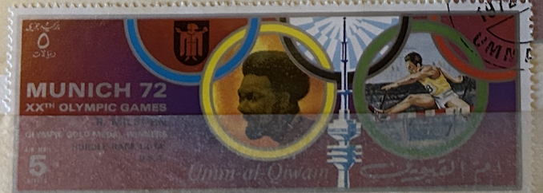
| SOURCE | TITLE| IMAGE MATCH | click to source page |
| eBay | UMM AL QIWAIN 1972 5r used NG Olympic Games Munich Discus AIRMAIL STAMP ##a3 | eBay |  |
| eBay | Ajman Stamps Depict Arab Masterpieces of the 13th Century on 7 Stamps Mint NH | eBay |  |
| Wikimedia.org | File:1972 stamp of Ajman Renate Stecher.jpg - Wikimedia Commons |  |
| eBay | Ajman Indiana Olympics Postal Stamps for sale | eBay | 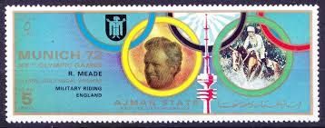 |
| Wikimedia.org | File:1972 stamp of Ajman Frank Shorter.jpg - Wikimedia Commons | 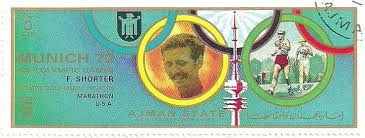 |
| Wikimedia.org | File:1972 stamp of Ajman Vasily Alekseyev.jpg - Wikimedia Commons | 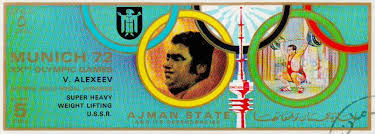 |
| Wikimedia.org | File:1972 stamp of Ajman Nadezhda Chizhova.jpg - Wikimedia Commons | 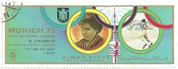 |
| Alamy | United arab emirates postage stamp hi-res stock photography and images - Alamy |  |
| Dreamstime.com | Medals Serie Stock Photos - Free & Royalty-Free Stock Photos from Dreamstime |  |
| Shutterstock | Munich Stamp: Over 1,849 Royalty-Free Licensable Stock Photos | Shutterstock | 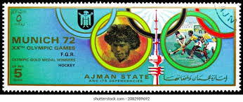 |
| Alamy | Quwain hi-res stock photography and images - Page 8 - Alamy | 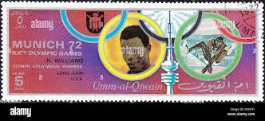 |
| Alamy | 1972 olympics hi-res stock photography and images - Alamy |  |
| Dreamstime.com | Ludvik Danek 1937-1998, Czechoslovakia, Summer Olympic Games 1972 - Munich Medals Serie, Circa 1972 Editorial Photography - Image of correspondence, antique: 235636277 | 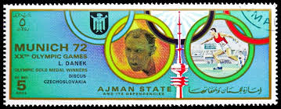 |
| Wikipedia | Equestrian at the 1972 Summer Olympics – Individual jumping - Wikipedia | 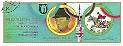 |
| Alamy | Ajman postage stamp hi-res stock photography and images - Page 9 - Alamy |  |
| Alamy | American swimmer Mark Spitz and seven-time Olympic champion returns to Munich (Bavaria, Germany) to promote swimming trunks on 23 August 1977. | usage worldwide Stock Photo - Alamy | 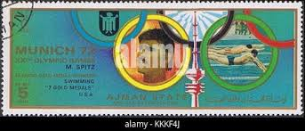 |
| Alamy | Nadezhda chizhova hi-res stock photography and images - Alamy | 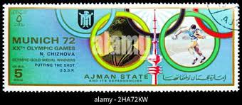 |
| Shutterstock | Olympics Retro: Over 10,946 Royalty-Free Licensable Stock Photos | Shutterstock |  |
| Shutterstock | 16+ Thousand Vintage Olympic Royalty-Free Images, Stock Photos & Pictures | Shutterstock |  |
| Shutterstock | Runner Post: Over 3,313 Royalty-Free Licensable Stock Photos | Shutterstock | 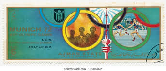 |
| Alamy | The 1972 stamp from Ajman features a portrait of renowned artist A. Bondarchuk. This stamp was part of a series released to commemorate the contributions of Bondarchuk to the arts and culture |  |
| PicClick UK | UMM AL QIWAIN Winter Olympics 1968 Stamps Sheet Mint Never Hinged Stamps R46236 £8.24 - PicClick UK | 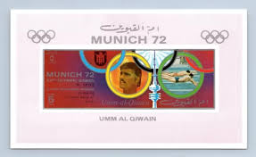 |
| Shutterstock | 3+ Thousand Munich Stamps Royalty-Free Images, Stock Photos & Pictures | Shutterstock | 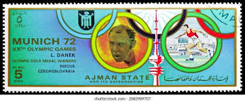 |
| What are the prices of the three stamps? | 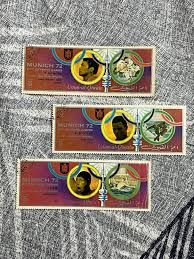 | |
| Dreamstime.com | Wolfgang Nordwig Stock Photos - Free & Royalty-Free Stock Photos from Dreamstime | 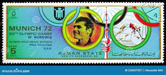 |
| Shutterstock | Munich Stamp: Over 1,861 Royalty-Free Licensable Stock Photos | Shutterstock |  |
| eBay | Ajman 1972 Summer Olympic, Munich 1972, MNH, imperf. DELUXE | eBay |  |
| Dreamstime.com | Gymnastics, Summer Olympic Games 1960 - Rome, Serie, Circa 1960 Editorial Stock Image - Image of philatelic, post: 223496879 |  |
| Alamy | John akii bua hi-res stock photography and images - Alamy | 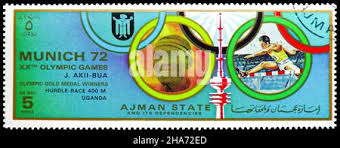 |
| PICRYL | 11 Viktor klimenko Images: PICRYL - Public Domain Media Search Engine Public Domain Search |  |
| Dreamstime.com | Ajman State, 1972, Munich 72 XX Th Olympic Games, R Williams Long Jump Gold Medal USA Stamp Editorial Photo - Image of letter, mail: 250057961 | 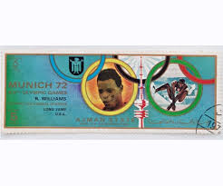 |
| Alamy | Olympic games of munich 1972 hi-res stock photography and images - Page 9 - Alamy | 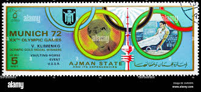 |
| Shutterstock | 11,414 Emirate Using Royalty-Free Images, Stock Photos & Pictures | Shutterstock | 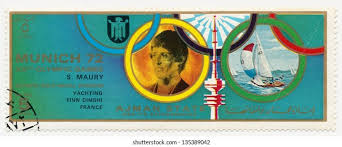 |
| Shutterstock | 3,9 mil resultados de imágenes, fotos de stock e ilustraciones libres de regalías para Series 1972 | Shutterstock |  |
| Alamy | Dieter kottysch hi-res stock photography and images - Alamy | 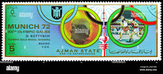 |
| Alamy | Olympic games in munich postage hi-res stock photography and images - Page 3 - Alamy | 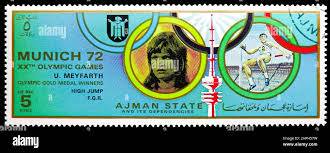 |
| eBay | Olympics German & Colonies Miniature Sheet Stamps for sale | eBay | 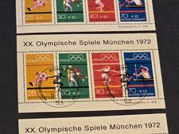 |
| Alamy | Games olympic boxing munich hi-res stock photography and images - Alamy |  |
| eBay | Fujeira / Olympic Games Munich 1972 , Winners . MNH | eBay | 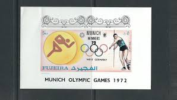 |
| eBay | Stamps Ajman Progressive Proofs | eBay |  |
| eBay | Machine Cancel Olympics German & Colonies Stamps for sale | eBay | 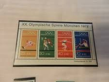 |
| timbre.sk | Fujeira | 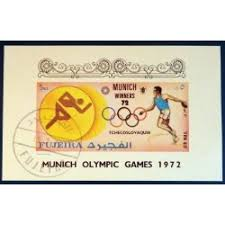 |
| eBay | FUJEIRA 1972 MUNICH 72' WINNERSMINT VF NH O.G S/S CTO (F5) | eBay | 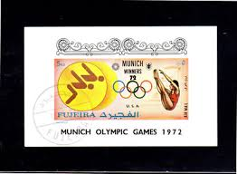 |
| eBay | FUJEIRA Olympic Games 1972 Munich complete set of 25 Imperforated blocks MNH | eBay |  |
| eBay | Liberia 826/31 Block 60 Per A+B+ Sonderblöcke Mint / Olympiad 2/15569 | eBay | 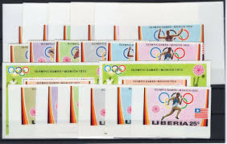 |
| eBay | Germany 1972 Olympic First Day Cover Unit Scott# B475a, B489, B490 Set of Three | eBay |  |
| aail.no | Retail Tags Herma 6919 White String Tags - 1000 Pack Of 10x22mm Cardboard Labeling Tags With Red String Tags For Labeling | 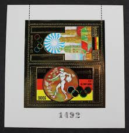 |
| eBay | FUJEIRA Munich Olympics Winners (Discus, Czechoslovakia) MNH souvenir sheet | eBay |  |
| eBay | Fujeira 1972 Olympische Sommerspiele, München 1972, gestempelt,, Block, DELUXE | eBay |  |
| eBay | 1976 Olympic Stamps Canada for sale | eBay | 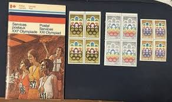 |
| eBay | Romania Olympics Stamps for sale | eBay | 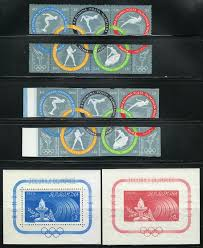 |
| eBay | 77649] Yemen YAR 1970 Olympic Games Munich Souvenir Sheet MNH | eBay | 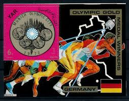 |
| HipStamp | Browse Listings in Middle East > United Arab Emirates / HipStamp |  |
| eBay | Germany & Colonies Olympics Souvenir Sheet Stamps for sale | eBay | 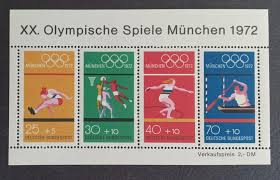 |
| schuf.de | Topical Four Volume Of 1972 Munich Olympics Stamp Catalogs ~1000 Stamps Pahlavi Shah Era Iran |  |
| mbeatpercussion.com | Topical Four Volume Of 1972 Munich Olympics Stamp Catalogs ~1000 Stamps Pahlavi Shah Era Iran |  |
| eBay | Ras al Khaima 1972 Munich Olympics Winners Medals Sports Stadium Flags m/s Imp | eBay | 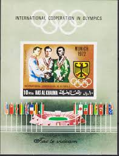 |
| eBay | Olympische Spiele München Mi. Bl.8 Stempel Eröffnungsfeier 1972 | eBay | 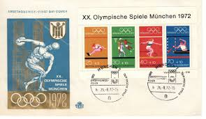 |
| eBay | AJMAN 1969 OLYMPICS, Cpl XF Perf+Imperf MNH** Sheets, Cycling Race, Ancient Game | eBay | 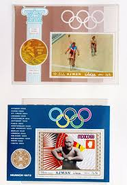 |
{kind=link}
{kind=link}
{kind=link}